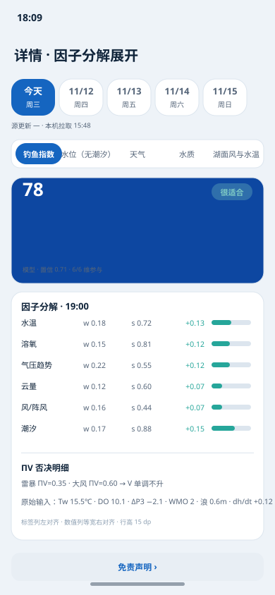
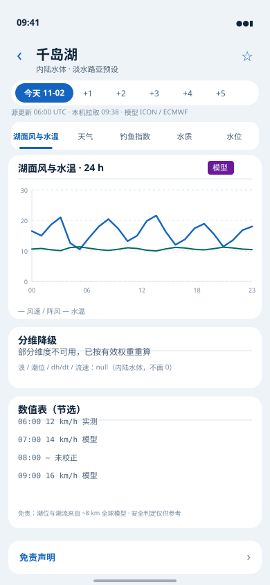
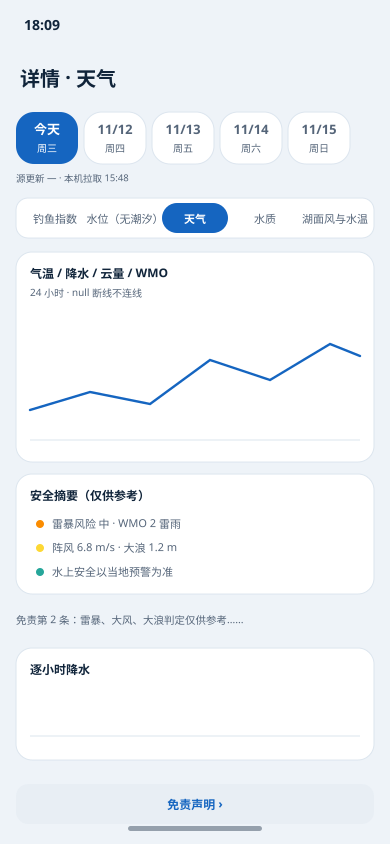
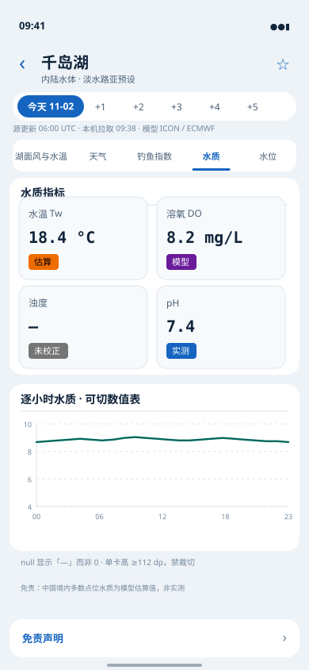
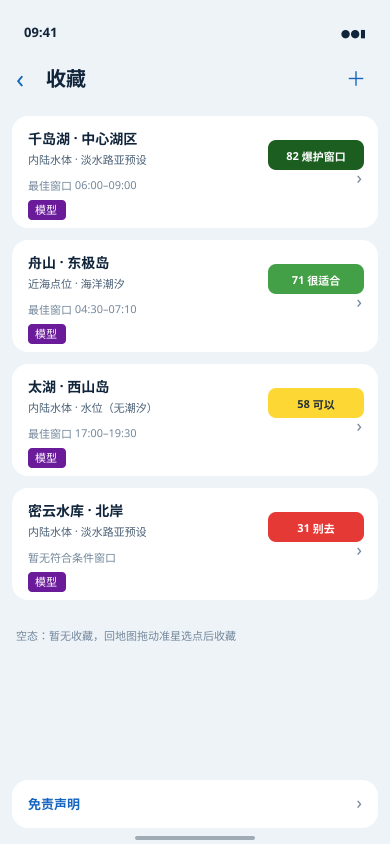

02 · 补充屏结构稿（🔶 按规格推导）
S03–S08 复用 S02 屏骨架，按 screens.json 的层结构推导，用于表达层级与占位。视觉细节以 01 的基准屏 + design-tokens.json 为准。

子分 / ΠV / 原始输入 16 项

内陆降级 + 分维降级卡

曲线 + 安全摘要

2×2 指标卡（高 ≥112 dp）

潮高 + dh/dt + 校正对照 + 现场校潮

点位 + 最佳窗口 + 档位